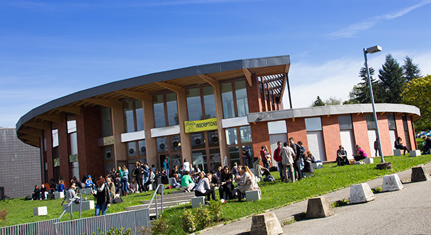

L'Université Savoie Mont-Blanc rejoint les partenaires de Prof @ la carte !

Ce sont quatre écoles et instituts, répartis sur les sites d'Annecy-le-Vieux, du Bourget, du Lac et de Jacob-Bellecombette qui ont rejoint notre réseau de partenaires aujourd'hui. Ce matin, Denis Varashin, président de l'Université
Savoie Mont-Blanc, a précisé que les écoles...
Lire la suite
Lire la suite